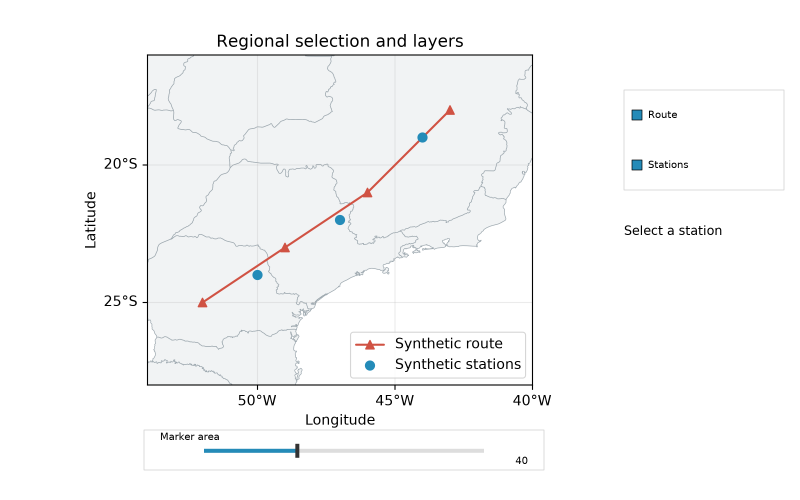
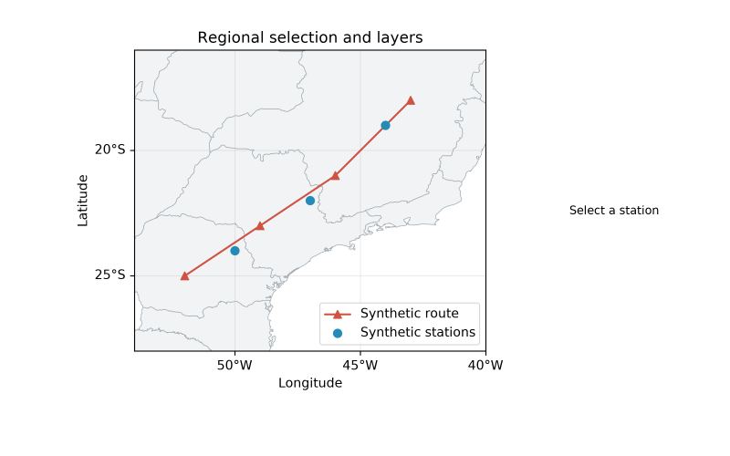

Interação regional 0.3.0 development
Composição original de interactive_layers.py, com rotas/estações sintéticas e controles opcionais. Geografia Natural Earth em domínio público; DejaVu preserva sua própria licença. O manifest identifica os bytes e o gerador. Nenhum asset de outro viewer foi copiado.

savefig() não incorpora controles de interação:

Consulte o guia para instalar extras, picking, sliders, seleção, limites de reprojeção, notebook e lifecycle. Estas imagens foram geradas pelo renderer próprio e inspecionadas localmente; não são aceite visual humano de Linux/macOS nem do navegador vivo.